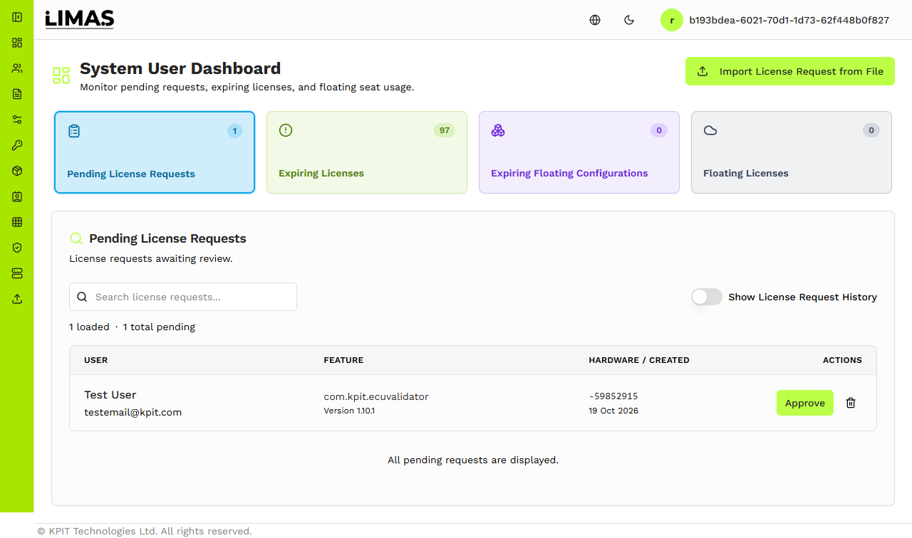
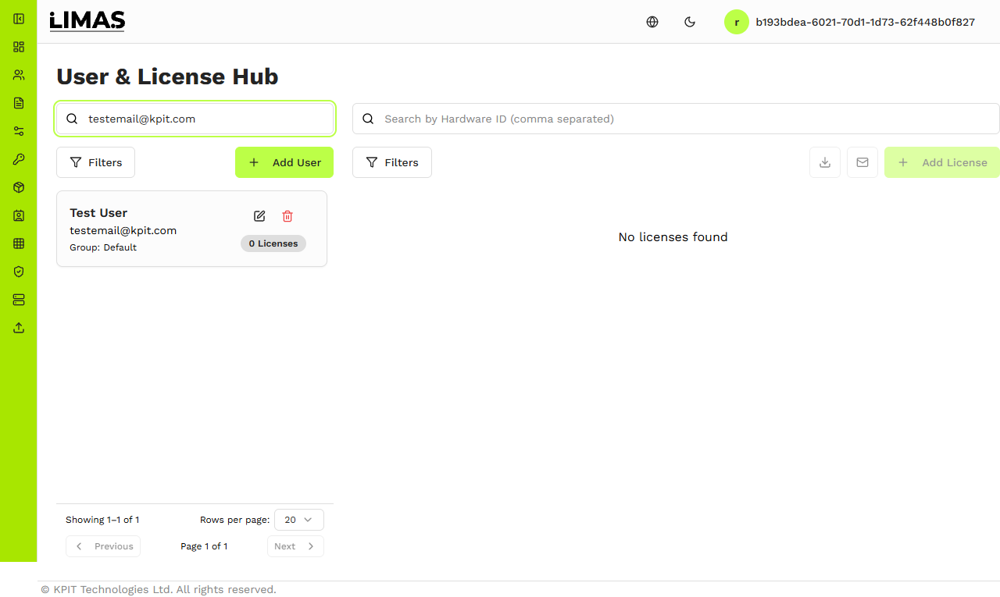

LIMAS-SUD-151 — Test User approval Result: FAILED (executed; no longer skipped). Request: LR-15803; user: Test User. Group: Default; profile: ECU Validator; role: 1.0.0. Expiration and maintenance: 3 December 2026. Approve Request was clicked exactly once. POST /limas/api/users returned 201 and created the user; the following PUT /limas/api/users returned HTTP 500. The UI displayed: Failed to approve the request. Please try again. Independent fresh navigation confirmed that the request remains pending; User & License Hub shows Test User in Default group with 0 licenses. No second approval was submitted. The first response attachment captured the preliminary user creation call. The failed PUT is present in the trace and summarized in approval-outcome.json. The response observer was narrowed afterward for future runs; the original failing result was preserved. The previous skipped attempt remains linked for history. Dashboard: 916 cases; 857 passed; 37 failed; 22 skipped. All tabs: 2,599 planned; 1,601 passed; 108 failed; 183 skipped; 707 remaining. Bulk execution remains stopped. Open approval-execution.html for evidence links.
Complete execution screenshots, video, and trace · API outcome summary

